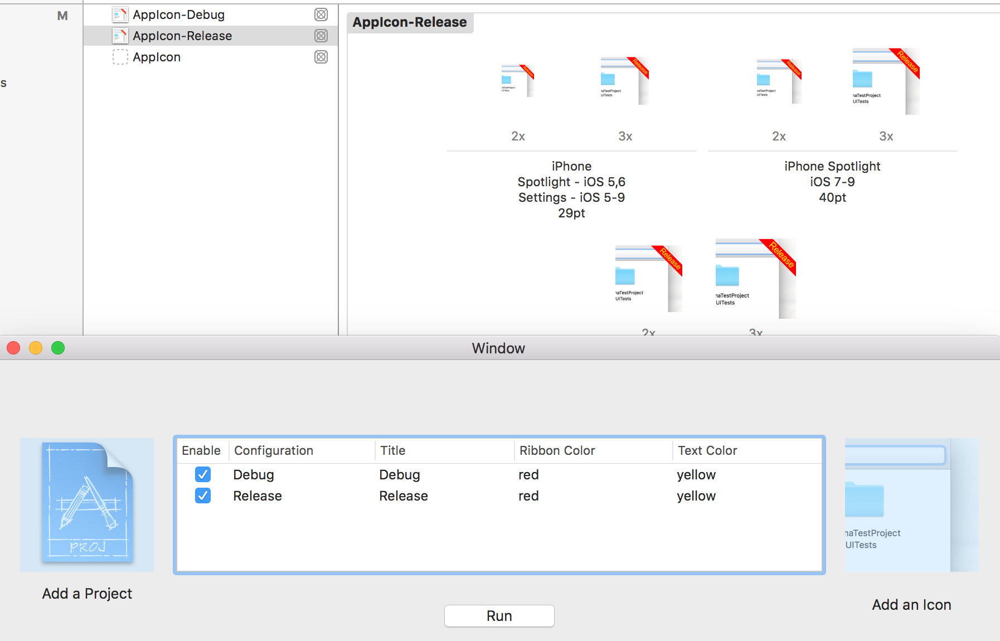

Hi from the CodeBug.
Do you know what bugs the code bug? Pun intended. UIStoryboardSegues. Yes bugs, they suck. We'll talk in a further article about that. But we digress.
Some time ago the bug has written an article about a small script which could tag app icons. Cute idea, but someone took it to the next level and made it into a much more powerful OSX app. The CodeBug loved the idea and also created a command line tool for it.
Meet Xzibit. Xzibit creates an Icon set for each scheme of your Xcode Project and writes a text label in the top right corner of each Icon.

XZibit comes in two forms:
1. A Mac OS app.
2. A Command line tool.
You can download both of them on github.
The Mac OS App requires a .xcodeproj and a .png icon 180px * 180px and it does the magic for you. The only dependency is imagemagick:
brew install imagemagick
Happy Icon Tagging